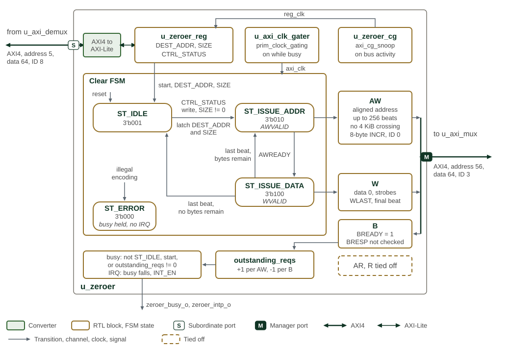

Zeroer
The SMC Memory Zeroer efficiently initializes large memory regions to zero without CPU intervention. The unit uses a state machine-based architecture with dual clock domains.
SMC Memory Zeroer Integration summarises the zeroer control aperture and fabric integration.
| Parameter | Description |
|---|---|
Address Range |
0xC003_8200 - 0xC003_83FF (512 bytes) |
Control Interface |
AXI4 (5-bit address, 64-bit data, 8-bit ID), converted internally to AXI4-Lite for the registers |
Data Interface |
AXI4 Master (56-bit address, 64-bit data, 3-bit ID; 4-bit ID after the shared DMA/zeroer mux) |
Maximum Burst Length |
256 beats ( |
Outstanding Transactions |
Counted by a 32-bit counter; no 32-transaction issuance limit or counter-based back-pressure |
Use Cases
-
System Initialization: Clear memory regions during boot or reset sequences
-
Security Operations: Sanitize sensitive data areas
-
Memory Management: Initialize allocated memory blocks
-
Error Recovery: Clear corrupted memory regions
Architecture
The DMA and zeroer share the data-accelerator fabric path shown in SMC DMA frontend, backend and shared fabric path.
State Machine
The zeroer state machine has three operating states and an error state (SMC zeroer state machine).
| State | Description |
|---|---|
ST_IDLE (3’b001) |
Idle state waiting for configuration and trigger |
ST_ISSUE_ADDR (3’b010) |
Address phase - issuing AXI write addresses |
ST_ISSUE_DATA (3’b100) |
Data phase - streaming zero data for all beats |
ST_ERROR (3’b000) |
Entered from any illegal state encoding; holds the zeroer busy, with no interrupt, until reset |
SMC memory zeroer state machine and AXI write flow shows the state machine and its AXI write flow.

Rounded boxes are the states of the clear state machine, with their encodings; grey
arrows are transitions, labelled with their conditions. A write to CTRL_STATUS while
SIZE is non-zero leaves ST_IDLE. Each pass through ST_ISSUE_ADDR and
ST_ISSUE_DATA issues one write burst of zeros, and the machine returns to ST_IDLE
once no bytes remain. ST_ERROR is entered only from an illegal state encoding and
is left only by reset. The write-response channel is always ready and its response code
is not checked; the outstanding-request count decides when the zeroer stops being busy.
Operation Flow
-
Configuration: Software writes destination address and size to registers
-
Trigger: Write to control/status register initiates operation
-
Address Phase: Hardware calculates optimal burst patterns and issues write addresses
-
Data Phase: Hardware streams zero data matching issued address beats
-
Completion: State machine returns to idle with status update and optional interrupt
AXI Master Interface
SMC zeroer AXI4 Master Characteristics summarises the zeroer’s AXI master interface.
| Parameter | Specification |
|---|---|
Address Width |
56-bit addressing for large system integration |
Data Width |
64-bit data path |
ID Width |
4-bit transaction ID (internal 3-bit usage) |
User Signals |
12-bit user field for system-specific attributes |
Maximum Burst Length |
256 beats ( |
Burst Calculation |
Automatic optimal burst sizing |
Address Alignment |
Intelligent handling of unaligned start addresses |
Boundary Handling |
Automatic burst fragmentation at page boundaries |
Outstanding Transaction Management
The zeroer counts accepted write addresses and consumed write responses in a
32-bit outstanding-request counter. The counter determines whether responses
remain pending; it does not impose a limit of 32 transactions or throttle
address issuance. AXI AWREADY and WREADY provide downstream back-pressure.
The response channel is consumed without checking BRESP. Completion means
that all responses have arrived, not that every write succeeded. The internal
error state handles an illegal state-machine encoding, not AXI bus errors.
The
Memory Zeroer procedure
in the Programmer’s Guide covers validating a request and verifying a clear.
Dual Clock Domain Architecture
The zeroer implements dual clock domain operation for power management and interface isolation.
Clock Domains
SMC zeroer Clock Domain Characteristics identifies the AXI and APB clock domains and their roles.
| Clock Domain | Description |
|---|---|
AXI Clock (axi_clk) |
Dedicated clock for AXI master operations, enabled only during active zeroing |
Register Clock (reg_clk) |
Separate clock for register interface, independent of AXI activity |
Clock Gating
SMC zeroer Clock Gating Control gives the gating conditions for each clock domain.
| Domain | Gating Logic |
|---|---|
AXI Clock |
axi_clk_enable = disable_cg | zeroer_busy_o | ~rst_ni |
Register Clock |
reg_clk_enable = disable_cg | register_activity | ~rst_ni |
Implementation |
prim_clock_gating for glitch-free operation |
Test Support |
Test enable override for manufacturing test |
Reset Override |
Ensures proper reset domain operation |
Control and Status
Operation Control
SMC zeroer Configuration and Control defines the registers used to configure and start a zeroing operation.
| Register | Description |
|---|---|
DEST_ADDR |
64-bit byte address for destination memory region |
SIZE |
64-bit byte count for zeroing operation |
CTRL_STATUS |
Control and status register (trigger, busy status) |
CTRL_STATUS.INT_EN |
Enables the completion pulse |
Status Features
-
Busy Status: Real-time indication of zeroing operation in progress
-
Completion Status: Updates when all write responses received
-
Error Reporting: No software-visible AXI error report; failed write responses are not distinguished from successful responses
-
Interrupt Generation: Optional interrupt on operation completion
Operation Details
SMC zeroer Data Generation and Control summarises zero-data generation and transfer control.
| Feature | Description |
|---|---|
Zero Data Generation |
Hardware generates zero data for all beats |
Strobe Calculation |
Correct byte strobes for partial transfers and unaligned addresses |
Last Beat Handling |
Proper w_last assertion for burst completion |
Size Tracking |
Accurate remaining size calculation throughout operation |
Overflow Protection |
Overflow assertions are simulation checks; there is no hardware overflow-rejection status or recovery control |
Abort |
No software abort control or guarantee that a reset safely drains outstanding writes |
Memory Map and Register Reference
Memory Map
Register offsets are relative to the block base in the subsystem memory map. The detailed map below defines each register and its fields.
Detailed Register Map
Zeroer Control Address Map
Control and status registers for the AXI memory-zeroing engine.
Register List:
| Address | Name | Access | Description |
|---|---|---|---|
| 0x0 | DEST_ADDR | RW | - |
| 0x8 | SIZE | RW | - |
| 0x10 | CTRL_STATUS | RW | Writing this register will trigger start of zeroer. The write is ignored while SIZE is 0. |
Register Details:
DEST_ADDR
| Bits | Field | Access | Reset | Description |
|---|---|---|---|---|
| 63:0 | DEST_ADDR | RW | 0x0 | Byte address to write zeros to |
SIZE
| Bits | Field | Access | Reset | Description |
|---|---|---|---|---|
| 63:0 | SIZE | RW | 0x0 | Size in bytes of zeros to write |
CTRL_STATUS
| Bits | Field | Access | Reset | Description |
|---|---|---|---|---|
| 63:33 | Reserved | - | - | Reserved |
| 32 | STATUS | R | 0x0 | Indicates whether the zeroer is busy. 1 means the zeroer is active, has pending work, or is in an error state; 0 means it is idle with no pending or outstanding work, including after completion. |
| 31:1 | Reserved | - | - | Reserved |
| 0 | INT_EN | RW | 0x0 | If enabled, an interrupt will be outputted once zeroer completes. |